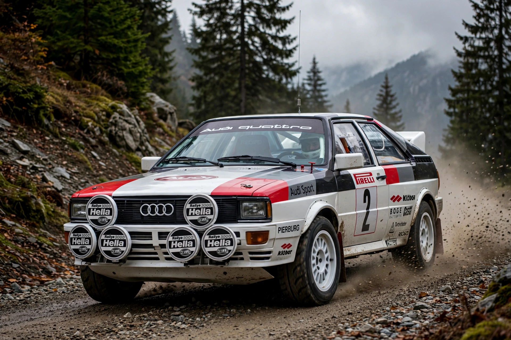

Quattro ("four" in Italian) may refer most notably to Audi's four-wheel-drive technology and the original Audi Quattro car. This article covers the Audi system and car; the name is also used for other products.

Unveiled at the 1980 Geneva Motor Show, the Audi Quattro was a turbocharged coupé with permanent all-wheel drive — revolutionary for road and rally cars. In the World Rally Championship, driven by Michèle Mouton, Hannu Mikkola and Stig Blomqvist, it transformed rallying, winning manufacturers' titles in 1982 and 1984.
Lowercase "quattro" denotes Audi's all-wheel-drive technology, later using Torsen centre differentials and, in transverse models, Haldex-type couplings. The system became central to Audi's brand identity and motorsport, including the dominant Sport Quattro S1 Group B car.
Quattro is also a spreadsheet by Borland/Corel (Quattro Pro), a razor by Schick, and the Italian word for the number four.